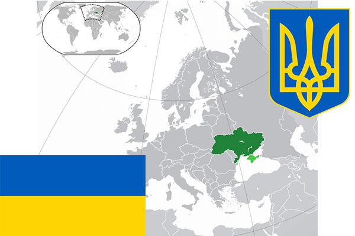

To`liq nomi: Ukraina
Region: Janubi-sharqiy Yevropa
Qonunchilik shakli: Respublika
Mustaqillik kuni: 24 avgust 1991-yil
Poytaxt: Kiyev
Maydoni: 603,700 km²
Chegaradosh davlatlari: Belorusiya, Polsha, Slovakiya, Vengriya, Ruminiya, Moldova, Rossiya
Aholisi: 42 248 598 (2017-yil)
Aholi zichligi: 73,92 /км²
Aholining o`rtacha yoshi: 71,21 yil
Rasmiy tili: Ukrain tili
Dini: Xristian
Pul birligi: Grivna
Telefon prefiksi: +380
Internet domen: .ua
Xalqaro tashkilotlarga a`zoligi: BMT
Dengiz va okeanlarga chiqishi: Qora dengiz
YIM: Butun: $ 87 mlrd. (2016-yil)
Yirik shaharlari: Kiyev, Lugansk, Donetsk, Xarkov